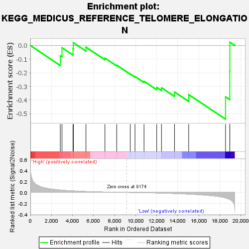
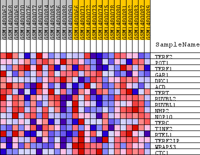
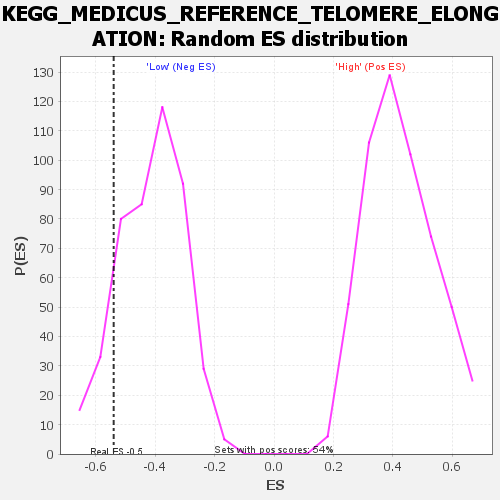

| Dataset | WG6v3.MRPL3.cls#High_versus_Low.MRPL3.cls#High_versus_Low_repos |
| Phenotype | MRPL3.cls#High_versus_Low_repos |
| Upregulated in class | Low |
| GeneSet | KEGG_MEDICUS_REFERENCE_TELOMERE_ELONGATION |
| Enrichment Score (ES) | -0.5401825 |
| Normalized Enrichment Score (NES) | -1.3094589 |
| Nominal p-value | 0.11597374 |
| FDR q-value | 1.0 |
| FWER p-Value | 1.0 |

| SYMBOL | TITLE | RANK IN GENE LIST | RANK METRIC SCORE | RUNNING ES | CORE ENRICHMENT | |
|---|---|---|---|---|---|---|
| 1 | TERF2 | TERF2 | 2842 | 0.044 | -0.0750 | No |
| 2 | POT1 | POT1 | 3004 | 0.041 | -0.0162 | No |
| 3 | TERF1 | TERF1 | 4052 | 0.028 | -0.0237 | No |
| 4 | GAR1 | GAR1 | 4085 | 0.028 | 0.0206 | No |
| 5 | DKC1 | DKC1 | 5279 | 0.018 | -0.0121 | No |
| 6 | ACD | ACD | 7083 | 0.008 | -0.0922 | No |
| 7 | TERT | TERT | 8202 | 0.003 | -0.1441 | No |
| 8 | RUVBL2 | RUVBL2 | 9492 | -0.001 | -0.2088 | No |
| 9 | RUVBL1 | RUVBL1 | 9940 | -0.003 | -0.2276 | No |
| 10 | NHP2 | NHP2 | 10797 | -0.006 | -0.2623 | No |
| 11 | NOP10 | NOP10 | 12003 | -0.010 | -0.3073 | No |
| 12 | TERC | TERC | 12458 | -0.013 | -0.3100 | No |
| 13 | TINF2 | TINF2 | 13696 | -0.020 | -0.3409 | No |
| 14 | RTEL1 | RTEL1 | 15041 | -0.031 | -0.3599 | No |
| 15 | TERF2IP | TERF2IP | 18540 | -0.100 | -0.3764 | Yes |
| 16 | WRAP53 | WRAP53 | 18945 | -0.129 | -0.1868 | Yes |
| 17 | CTC1 | CTC1 | 18950 | -0.129 | 0.0243 | Yes |

